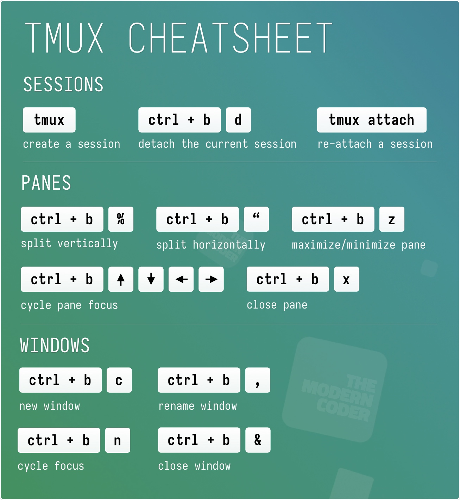

Instructions for setting up OAIC-T
{kind=link}
1. Get needed files
Git clone the needed scripts:
Git clone https://github.com/openaicellular/main-file-repo.git
Move ricinstallation.sh to the root folder / Move kpimondeploy.sh, oaictdeploy.sh, and srsrandeploy.sh to oaic folder “oaic/” Make executable by running the following command:
chmod +x filename.sh
2. Install the RIC by running the provided script
cd oaic
Run the ricinstallation script:
./ricinstallation.sh
3. Install srsRan by running the provided script
cd oaic
Run the installation script:
./srsrandeploy.sh
4. Setup the 5G Network
Terminal 1: Add UEs:
$ sudo ip netns add ue1
$ sudo ip netns add ue2
Check the results:
$ sudo ip netns list
Start the Core Network:
$ sudo srsepc
Terminal 2: Setup Environment Variables and Base Station:
$ export E2NODE_IP=`hostname -I | cut -f1 -d' '`
$ export E2NODE_PORT=5006
$ export E2TERM_IP=`sudo kubectl get svc -n ricplt --field-selector metadata.name=service-ricplt-e2term-sctp-alpha -o jsonpath='{.items[0].spec.clusterIP}'`
$ sudo srsenb --enb.n_prb=100 --enb.name=enb1 --enb.enb_id=0x19B --rf.device_name=zmq --rf.device_args="fail_on_disconnect=true,tx_port=tcp://*:2000,rx_port=tcp://localhost:2009,id=enb,base_srate=23.04e6" --ric.agent.remote_ipv4_addr=${E2TERM_IP} --log.all_level=warn --ric.agent.log_level=debug --log.filename=stdout --ric.agent.local_ipv4_addr=${E2NODE_IP} --ric.agent.local_port=${E2NODE_PORT}
Terminal 3: Set up the first UE:
$ sudo srsue \
--rf.device_name=zmq --rf.device_args="tx_port=tcp://*:2010,rx_port=tcp://localhost:2008,id=ue,base_srate=23.04e6" \
--usim.algo=xor --usim.imsi=001010123456789 --usim.k=00112233445566778899aabbccddeeff --usim.imei=353490069873310 \
--log.all_level=warn --log.filename=stdout --gw.netns=ue1
Terminal 4: Set up the second UE:
$ sudo srsue \
--rf.device_name=zmq --rf.device_args="tx_port=tcp://*:2007,rx_port=tcp://localhost:2006,id=ue,base_srate=23.04e6" \
--usim.algo=xor --usim.imsi=001010123456780 --usim.k=00112233445566778899aabbccddeeff --usim.imei=353490069873310 \
--log.all_level=warn --log.filename=stdout --gw.netns=ue2
Terminal 5: Attach the two UEs to eNB:
$ python3 multi_ues.py
Alternatively, generate traffics by iperf3: In Terminal 6 and 7:
$ iperf3 -s -i 1 -p 5201
$ iperf3 -s -i 1 -p 5301
In Terminal 6 and 7:
$ sudo ip netns exec ue1 iperf3 -c 172.16.0.1 -b 10M -i 1 -t 600 -p 5201
$ sudo ip netns exec ue2 iperf3 -c 172.16.0.1 -b 10M -i 1 -t 600 -p 5301
4. Deploy the KPIMON and OAIC-T xapps
Run the deploy script:
./kpimondeploy.sh
Run the deploy script:
./oaict.sh
5. Deploy the Server and Actor
Pre-requisites:
Install the following python package for the server:
sudo pip install configparser
sudo pip install psutil
Run the Server
cd server/src
sudo -E python3 server_main.py
Run the Actor
cd actor/src
sudo python3 actor_main.py